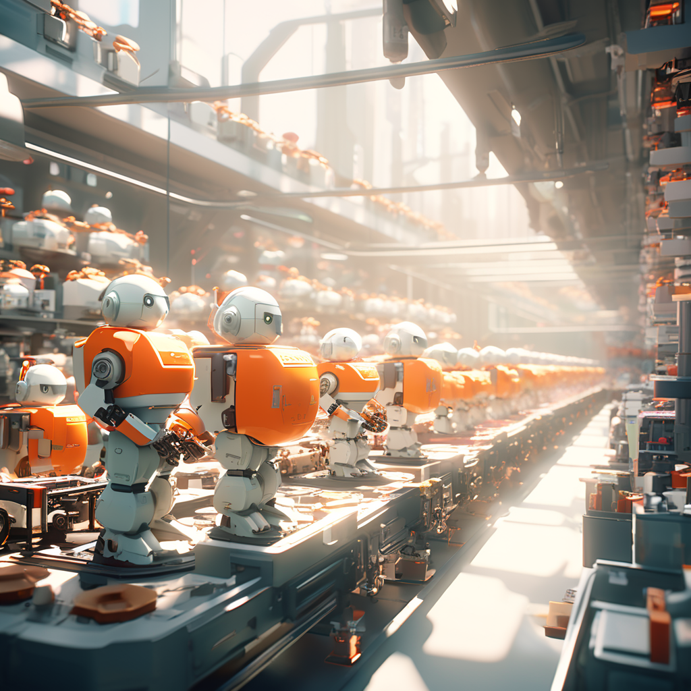
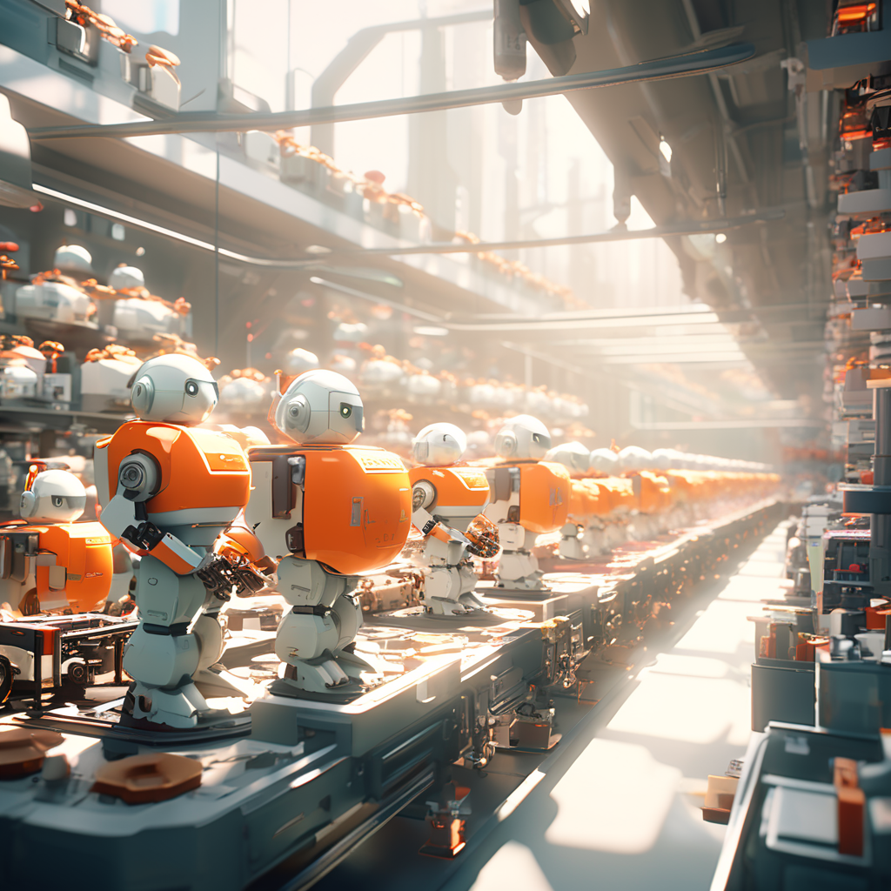
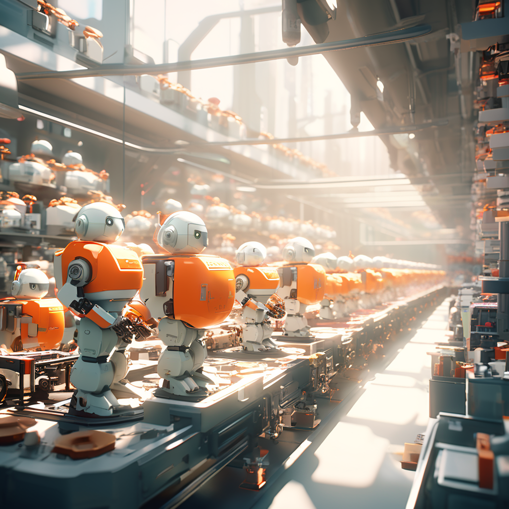

Набор картинок
 

Добро пожаловать на наш фан-сайт, посвященный увлекательному миру роботов игрушек! Мы - сообщество энтузиастов, которые разделяют страсть к робототехнике и рады поделиться с вами этим увлекательным увлечением.
Наши страницы наполнены яркими изображениями роботов различных форм и размеров. Вы сможете насладиться просмотром наших коллекций, которые включают в себя как классические модели, так и современные инновационные роботы.
Наш сайт постоянно обновляется новыми изображениями и информацией о последних трендах в мире игрушечной робототехники. Мы следим за выходом новых моделей, а также делимся с вами самыми интересными новостями из этой области.
Будьте с нами, чтобы не упустить ни одного нового робота и быть в курсе всех событий в мире робототехники! Благодарим вас за посещение нашего сайта, и надеемся, что вы найдете здесь много интересного и вдохновляющего!
